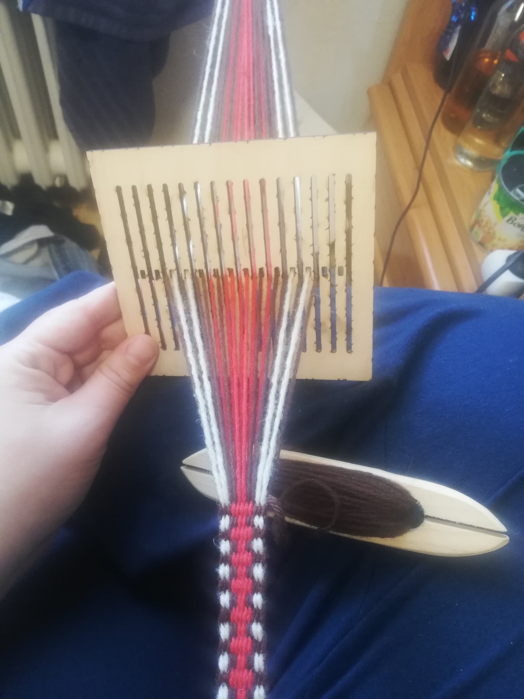
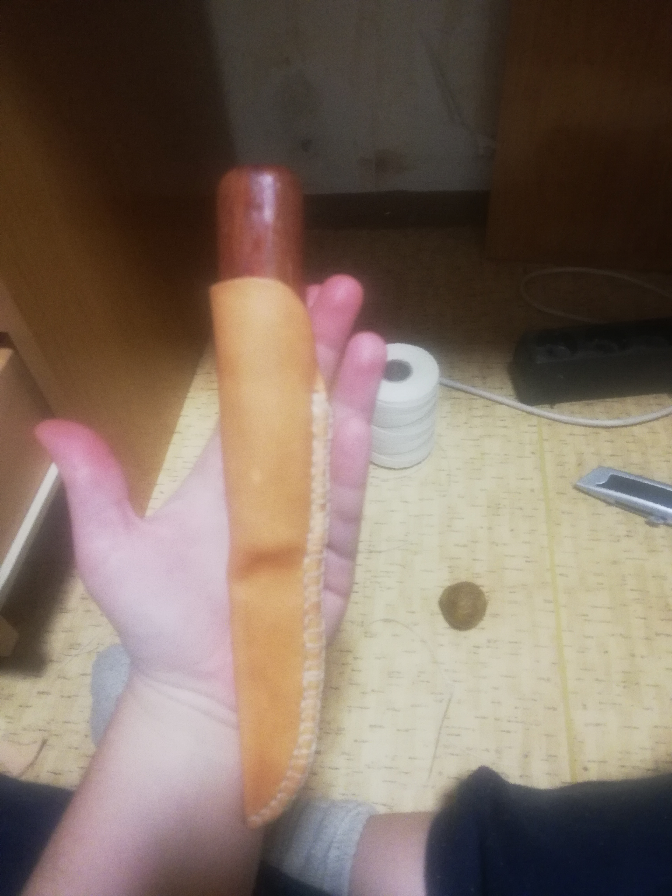

Ahoj, jmenuji se Petra Skácelová a ráda se učím novým věcem. Teď zrovna teda kódování (taky proto tvořím
tento jednoduchý a obsahově nepřesný web pro kurz Staň se kodérkou od Czechitas)
a taky různým druhům starým či ještě starším řemeslům. Mimo to studuju Informační studia
a knihovnictví, hraju si s daty a čtu, co mi přijde pod ruce. Dlouho jsem měla archeologické brigády
(taky jsem archeologii studovala), chvíli jsem se věnovala datovému managementu,
ale nyní se soustředím hlavně na školu (a dokonalování se v technických věcech)
Řemesla
Rukama už mi prošlo mnoho starých (i nových) řemesel či ručních prací (asi záleží na terminologii). Například:
Karetkování a jiná textilní výroba- chcete-li se zamotat do vlny, ideální volba
Výroba dřevěných misek dlátem - když vám nevadí, že jsou trošku od krve...
A tak dále...
Karetkování
Karetkování nebo takové tkaní na destičkách je textilní technika využívaná od pravěku.
Výsledkem této mnoho hodin trvající práce jsou ozdobné pásky, které je možné využít jako
opasky či zdobení okrajů oděvů. Umožňuje vytvářet nádherné točité vzory.

Hřebenový stávek
Tkaní na hřebenovém stávku je (občas) lehčím a rychlejším způsobem, jak vytvořit ozdobný pásek.
V základu umožňuje spíše jednoduché vzory, nicméně pokud to někdo umí (já ještě ne, hehe), dají se
vytvářet i úžasné věci.
Viking Knit
Moje hračka na cesty. Drobně propletený měděný (nebo klidně i stříbrný) drátek při správné kalibraci vytvoří krásný řetízek.
Takto tvořili šperky například Vikingové, nicméně jejich kvality jsem zatím nedosáhla.
Chybí mi čas a trpělivost

Práce s kůží
A abyste neřekli, že dělám samé nepraktické věci (což je pravda), tak něco trošku praktického.
Z kůže jdou tvořit různé věci, nicméně pro mě nejpotřebnější zatím byly pochvy na nůž
a obal na čtečku (stále nedodělaný, mimochodem).
Každopádně k profesionalitě to má ještě hoooodně daleko